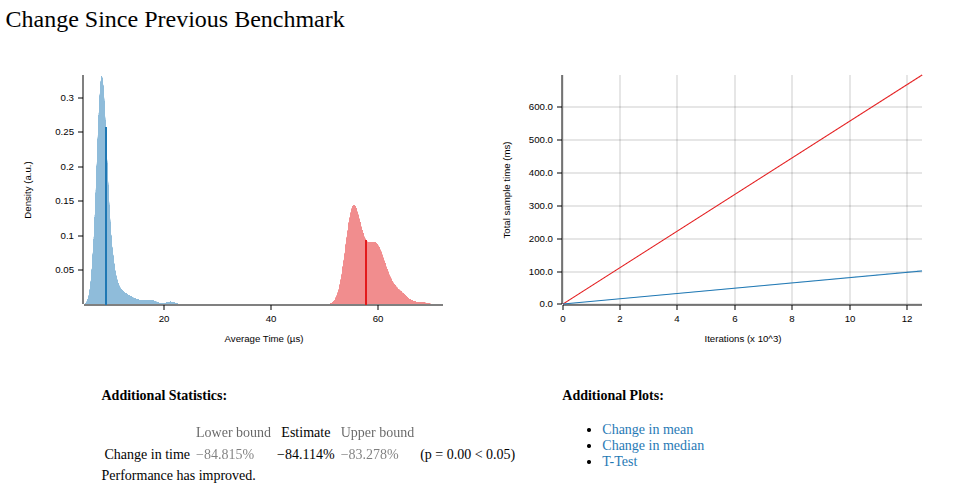
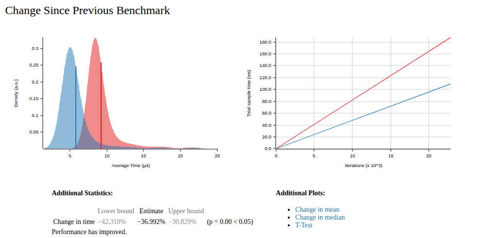

Snake Battle Royale: A Deep Dive into Low-Level Optimization
When 1000 snakes fight for survival, every microsecond counts.

The Project
I've been working on a high-frequency game server optimization project using a massive multiplayer snake battle royale as the test scenario. The goal? Learn and experiment with low-level optimization techniques in Rust by pushing tick rates to extreme limits.
Target Performance: 20,000+ ticks per second (0.05ms per tick) with 1000+ concurrent snakes.
The Game Concept
Imagine 1000+ snakes moving simultaneously on a shared 2D grid. Each snake moves 1 unit in any direction per tick. They collide, consume food, and fight for territory—all while maintaining real-time performance constraints with sub-millisecond tick processing.
The architecture is intentionally simple but performance-critical:
- Single process with two dedicated threads pinned to separate CPU cores
- Custom minimal lock-free queue for inter-thread communication
- 1000×1000 cell grid with efficient spatial queries
The Optimization Journey
I know this level of optimization might seem excessive for a snake game. In the real world, bottlenecks are usually in rendering, networking, or other high-level concerns. But here I have the privilege to ignore the big picture and focus purely on shaving every possible microsecond from the game tick loop. This is my playground for exploring performance optimization techniques that I can't justify in my day job.
Low Hanging Fruit: Grid Recreation Bottleneck
My first optimization was painfully obvious: stop recreating the grid every tick.
Before: Recreating a 1000×1000 grid every tick After: Incrementally updating only changed cells
The results were dramatic:
- 1000 snakes with heavy updates: 51.71 → 8.22 μs
- ~6x performance improvement
But this introduced a new problem: manual grid management is a bug magnet.
The Manual Grid Update Nightmare
With incremental updates, I had to ensure every state change was followed by a corresponding grid update:
- Snake moves → update old position (empty) and new position (snake)
- Snake grows → update new tail segment
- Snake dies → clear all segments
- Apple consumed → remove from grid
- Apple spawned → add to grid
The flow was correct but fragile. Small changes could easily break grid consistency, and the code was becoming a maintenance nightmare. I needed a better model.

Exploring Architectural Solutions
I brainstormed several approaches to solve this grid consistency problem:
1. Event-Driven Architecture ❌
Concept: Use events to decouple state changes from grid updates
Problem: Snake movement is inherently order-dependent. One snake must move first, then others operate on the updated state. Events don't handle this sequential dependency well.
2. Type-Level Invariants with Phantom Data ❌
Concept: Use Rust's type system to enforce grid consistency at compile time
Complexity: Would require significant refactoring and complex type machinery
3. Smart Wrapper Types with Invariants ✅
Concept: Wrap data structures in types that automatically handle grid updates
Advantage: Encapsulates grid logic, maintains performance, keeps code clean
Implementing Smart Wrapper Types
I chose the wrapper approach and created GridAwareSnake and GridAwareApple:
pub struct GridAwareSnake {
snake: Snake,
}
impl GridAwareSnake {
pub fn move_forward(&mut self, grid: &mut Grid) -> bool {
let new_head = self.snake.calculate_new_head();
// Check collisions BEFORE moving
if grid.get_cell(&new_head) == Cell::Snake {
self.snake.is_alive = false;
return false;
}
// Clear old tail, move snake, update new head
if let Some(tail) = self.snake.body.back() {
grid.set_cell(*tail, Cell::Empty);
}
self.snake.move_forward();
if let Some(head) = self.snake.body.front() {
grid.set_cell(*head, Cell::Snake);
}
true
}
}
Memory Safety: The Raw Pointer Pitfall
The initial implementation used raw pointers (*mut Grid) in wrapper types:
pub struct GridAwareSnake {
snake: Snake,
grid: *mut Grid, // ❌ Dangling pointer after grid moves
}
Problem: When GameState::random() created the grid locally and moved it, the raw pointers became dangling, causing segmentation faults.
Solution: Use explicit grid references:
pub fn move_forward(&mut self, grid: &mut Grid) -> bool {
// ✅ Safe, explicit dependency
}
The Unexpected Performance Win
Results: 8.22 → 4.56 μs ~1.7x additional performance improvement

This was surprising because I expected the wrapper approach to be slower due to:
- Additional function call overhead
- More complex control flow
- Extra self-collision detection logic
Why Smart Wrappers Are Faster
The performance improvement likely comes from:
1. Better Control Flow
Old approach: Check collisions after movement
snake.move_forward();
if self.grid.get_cell(head) == Cell::Snake {
snake.is_alive = false;
continue; // Dead snake still processes rest of loop
}
Smart wrapper: Check collisions before movement
if grid.get_cell(&new_head) == Cell::Snake {
self.snake.is_alive = false;
return false; // Early exit, no further processing
}
2. Improved Apple Consumption Logic
Old approach: Check apple consumption after movement
Smart wrapper: Check apple consumption before movement with will_eat_apple flag
3. Compiler Optimizations
The wrapper structure might allow the compiler to make better optimizations:
- More predictable branch patterns
- Better inlining opportunities
- Improved cache locality
4. Reduced Work for Dead Snakes
Dead snakes return early and don't continue processing, eliminating unnecessary operations.
Performance Results
The journey from the initial implementation to the optimized version:
- Initial: 51.71 μs per tick
- After grid optimization: 8.22 μs per tick (~6x improvement)
- After smart wrappers: 4.56 μs per tick (~1.7x additional improvement)
- After removing redundant checks: Even cleaner code with same performance
Total improvement: ~11x faster with cleaner, more maintainable code.
What's Next
We're just getting warmed up. We haven't even touched memory layout, custom allocators, SIMD, or any of the really juicy low-level stuff yet.
But for now, I'm satisfied with the journey from 51.71 μs to 4.56 μs. It taught me more about performance optimization than any textbook ever could.
This is the kind of rabbit hole I love diving into during those late-night coding sessions. When you're not constrained by business requirements or time pressure, you can explore the full depth of what's possible with modern systems programming. The intersection of performance, systems programming, and pure curiosity is where the magic happens.